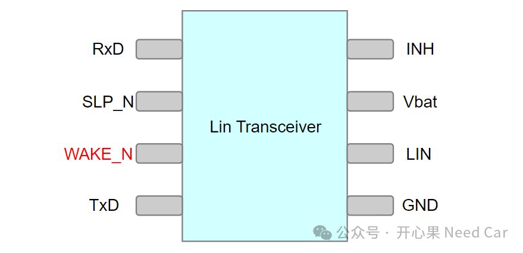
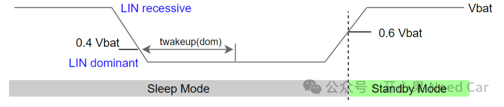
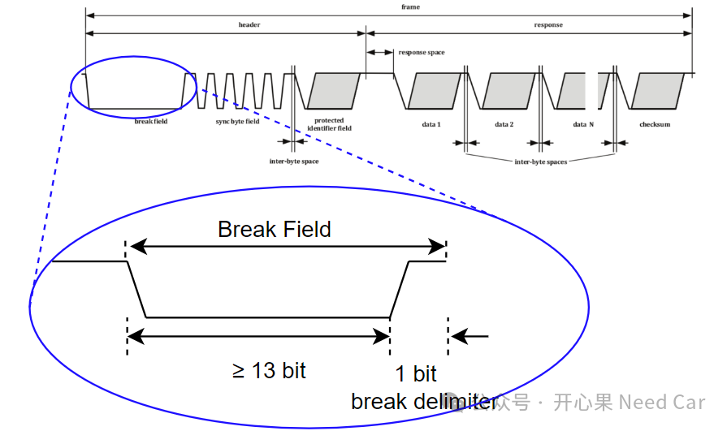
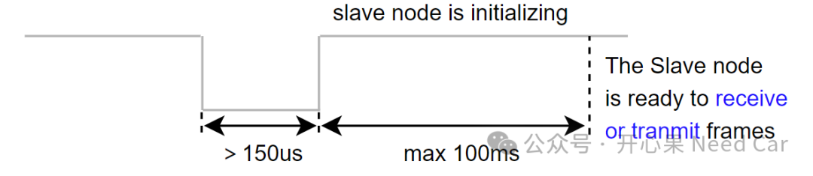
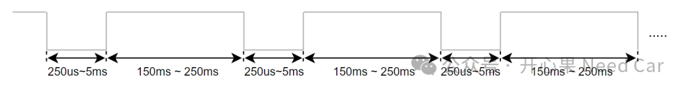
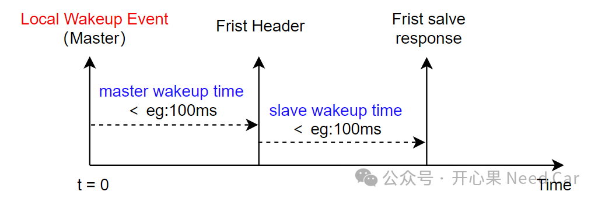
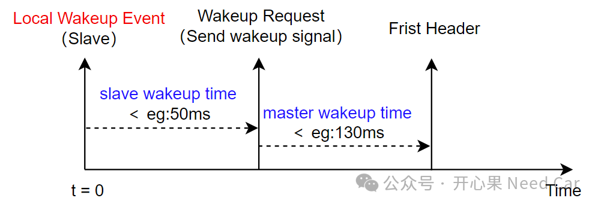
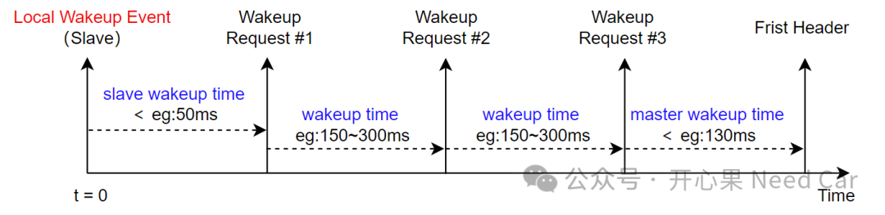
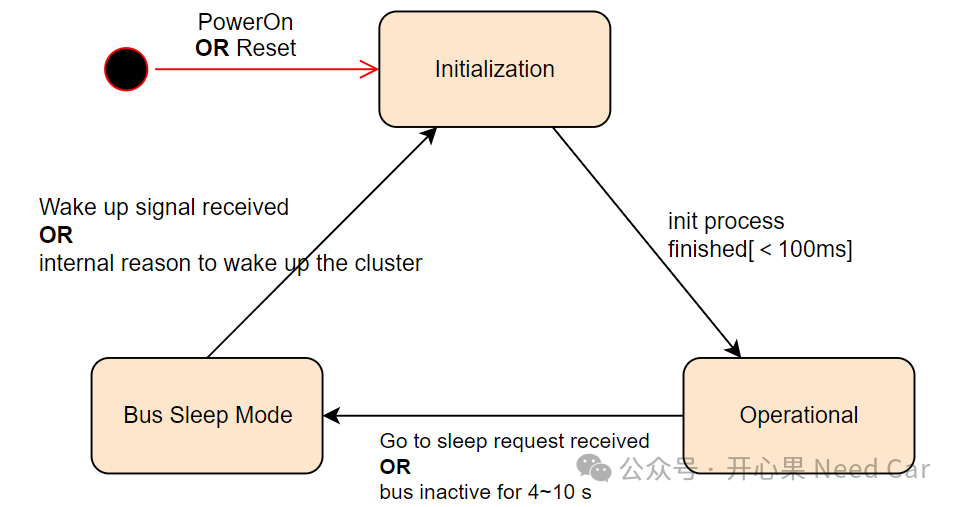
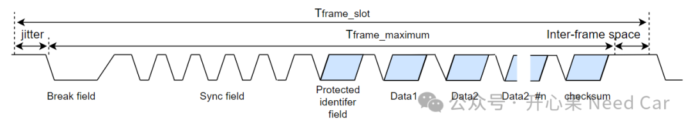

如果学习Lin，不了解Lin的休眠唤醒，不能算学习过Lin。如果经常查问题的小伙伴，应该能感觉出来，工程中的bug，尤其偶发类的bug，很多时候出现在休眠唤醒阶段。因此，掌握好休眠唤醒，是入门或者说能力进阶的必进之路。本文，针对Lin的休眠和唤醒，详细展开讨论。对于Lin Transceiver，唤醒源包括本地唤醒源和远程唤醒源。什么是本地唤醒源呢？答：比如WAKE_N Pin唤醒，示意如下：

实际的工程应用中，往往是主节点先唤醒，之后主节点通过发送Header（相当于唤醒帧）唤醒从节点。对于主节点的唤醒，依赖于OEM（Original Equipment Manufacturer）的具体要求，eg：KL15（硬线）、CAN/Flexray唤醒后主动唤醒Lin等方式。所以，这些唤醒方式类似本地唤醒，然后主动唤醒网段。
提示：对于Master本地唤醒，工程中，会要求其发送第一个header的时间，eg：＜100ms；如果是PowerOn或者hardware reset，Master节点发出第一个header时间可以放宽，eg：＜250ms。
什么又是远程唤醒呢？答：满足特定时序变化的Wakeup Pattern。在Lin网络簇中，任何Lin节点均可以发送唤醒信号（Wakeup Signal）。所谓远程唤醒信号就是250us~5ms的显性电平+LIN线的上升沿，示意如下：

也就是说，在LIN线，当Lin Transceiver识别到LIN线拉低时间＞twakeup(dom)，在之后的某个时刻，LIN线拉高，即可远程唤醒Lin Transceiver，使其从Sleep模式进入Standby模式，拉高INH，从而通知电源管理芯片给主芯片（uC）供电（eg：Vcc）。一般，Lin Transceiver手册会约束twakeup(dom)时间，比如：30~150us，也就是说，LIN被拉低150us，之后再拉高也可能处于休眠状态，所以，在设计中，如果要有效唤醒Lin Transceiver，LIN脚被拉低时间＞150us。唤醒帧特征：电平拉低一定时间+拉高，所以，主节点发送Header时，break field相当于唤醒帧，break field如下所示：
除了上述唤醒方式以外，还可以通过拉高SLP_N Pin唤醒收发器。即：将SLP_N从低电平拉高＞10 us（TJA1021手册约束）。对于Slave节点，如果收到唤醒信号，需要在100ms以内具备接收或者发送数据的能力，示意如下：

如果Lin网络簇中，主节点（Master）没有发送break field，或者一个节点发送了唤醒信号，但是150ms~250ms内没有收到其他节点的唤醒信号，该从节点可以进行3次唤醒尝试，示意如下：

如果唤醒的Lin从节点尝试了3次唤醒，还没有将Lin网络簇唤醒，第四次唤醒的间隔要＞1.5s，之后再次尝试3次唤醒，如此往复，示意如下：
既然Lin网络簇中的任意节点都可以发送唤醒信号，那么，就会存在多种唤醒策略。如果Master节点先唤醒，Master节点需要在一定时间（eg：100ms）内发出Header（充当唤醒帧），Slave收到Header以后需要在一定时间内给出响应（eg：100ms），示意如下：

其一，Slave节点先唤醒，需要在一定时间内（eg：50ms）发出一帧唤醒信号，主节点收到唤醒信号以后（主节点可以接收唤醒帧，且能被唤醒），需要在一定时间内（eg：130ms）发出Header，示意如下：

其二，Slave节点先唤醒，需要在一定时间内（eg：50ms）发出第一帧唤醒信号，之后在一定时间间隔内（eg：150~300ms）再发送两帧唤醒信号，主节点收到唤醒信号以后，需要在一定时间内（eg：130ms）发出Header，示意如下：
相对于其他总线的网络状态，Lin网络簇的网络管理相对简单，主要包括唤醒和休眠（Go to Sleep）。对于Slave节点来说，Slave通信状态主要包括：Initialization、Operational、Bus sleep mode，示意如下：

对于Lin的休眠，主要是主节点（Master）发送sleep命令，即：主节点通过0x3C（诊断报文）向网段内所有从节点发送0x00 0xFF 0xFF 0xFF 0xFF 0xFF 0xFF 0xFF。
除了发送休眠命令让从节点休眠以外，各个Lin节点如果在4~10s时间内，没有监听到总线active，也会进入休眠状态。即：总线空闲状态下，节点最快4s休眠，最晚10s休眠。
（一）唤醒时间参数约束
Lin网络簇基于调度表通信（schedule table），用Tbase作为调度的最小时间单位，eg：5ms or 10ms，工程中常见的是5ms。
对于一帧Lin报文，每帧长度需要满足这样的关系：Tframe_slot = Tbase * n，即：每帧报文的长度是基准时间的整数倍。并且，Tframe_slot =jitter + Tframe_maximum，一帧报文的时间参数约束，示意如下：

工程中，一般会约束jitter(抖动)＜1ms。
点击下方关注，一起聊聊Autosar/嵌入式，如果需要，联系作者进群，给你更专业的解答